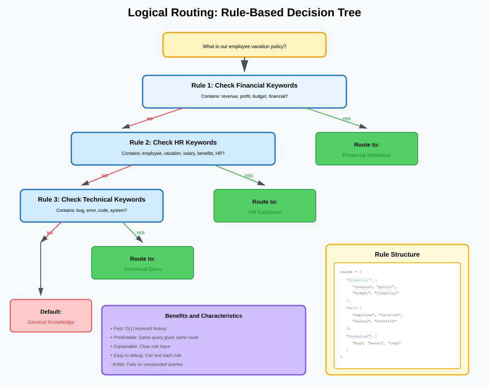
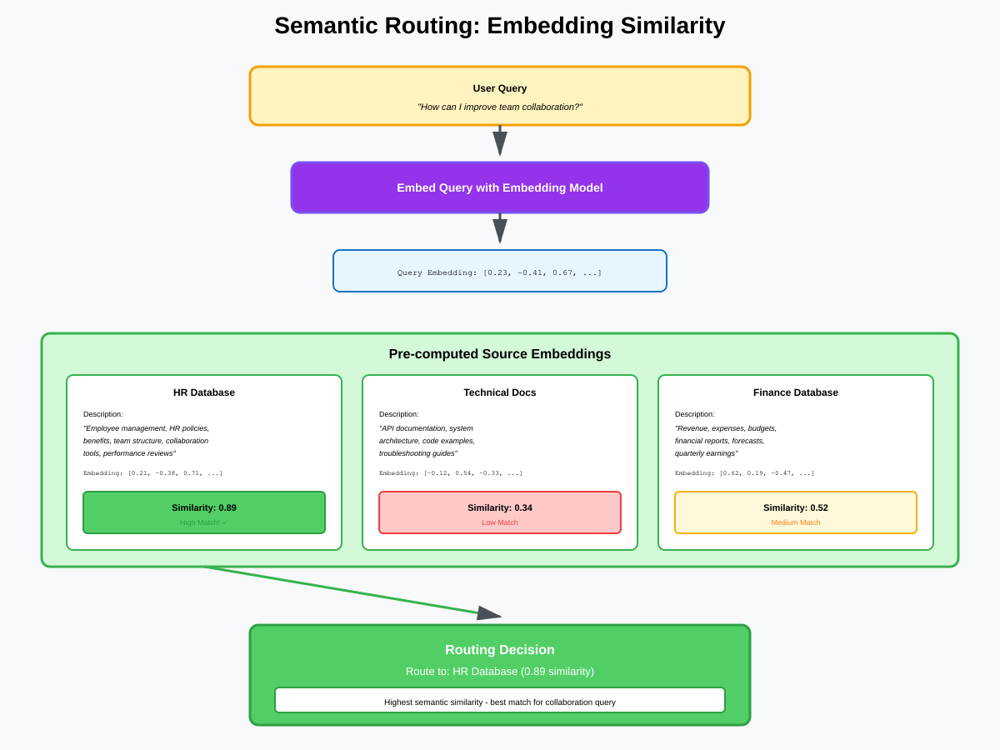
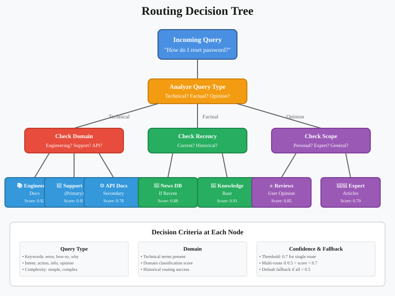
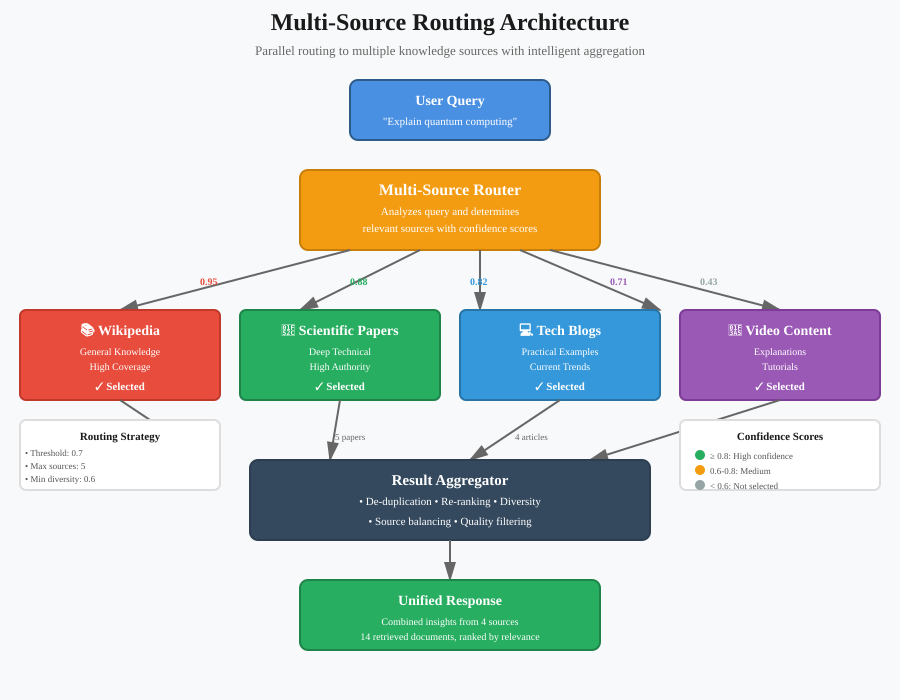
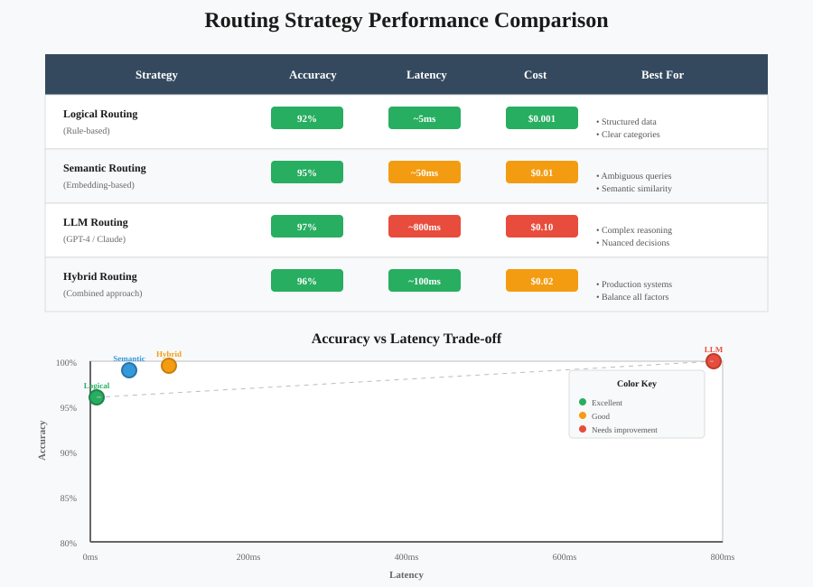

Routing Strategies: Deep Dive
Intelligent Source Selection for RAG Systems
📚 Quick Navigation
- Introduction
- Routing Overview
- Logical Routing
- Semantic Routing
- Hybrid Routing
- Multi-Source Routing
- Performance Optimization
- Implementation Examples
- Model Resources
- References & Further Reading
Introduction
Routing is the process of intelligently directing queries to the most appropriate data sources, models, or processing pipelines in a RAG system. Effective routing ensures that each query reaches the right knowledge base, improving accuracy while optimizing resource utilization.
Why Routing Matters:
- Accuracy: Send queries to the most relevant data source
- Efficiency: Avoid searching irrelevant databases
- Scalability: Distribute load across multiple sources
- Specialization: Leverage domain-specific knowledge bases
- Cost Optimization: Use appropriate models for each query type
- Latency Reduction: Skip unnecessary retrieval operations
Core Challenge:
In systems with multiple data sources, determining which source(s) to query requires understanding both the user's intent and the capabilities of each available source.
Routing Overview
Routing architectures vary from simple rule-based systems to sophisticated ML-powered decision engines.

Routing Components:
1. Query Analyzer
- Extract query intent and entities
- Classify query type (factual, analytical, conversational)
- Identify domain and topic
2. Source Selector
- Match query to available data sources
- Apply routing logic (logical, semantic, or hybrid)
- Rank sources by relevance
3. Execution Coordinator
- Execute retrievals from selected sources
- Manage parallel or sequential execution
- Handle failures and fallbacks
Routing Strategies:
Logical Routing:
- Method: Rule-based decision trees
- Use Case: Well-defined domains, clear boundaries
- Example: Route financial queries to financial_db
Semantic Routing:
- Method: Embedding similarity matching
- Use Case: Ambiguous boundaries, overlapping domains
- Example: Compare query embedding to source descriptions
Hybrid Routing:
- Method: Combine logical rules with semantic matching
- Use Case: Complex systems with both clear and fuzzy boundaries
- Example: Rules for must-haves, semantics for ranking
Logical Routing
Logical routing uses explicit rules and decision trees to route queries to data sources.

How Logical Routing Works:
Step 1: Define Routing Rules
Create explicit IF-THEN rules based on keywords, entities, or query patterns:
IF query contains ("revenue", "profit", "financial")
THEN route to financial_database
ELIF query contains ("customer", "support", "ticket")
THEN route to crm_system
ELIF query contains ("product", "inventory", "stock")
THEN route to inventory_database
ELSE
route to general_knowledge_base
Step 2: Query Analysis
Parse the query and extract relevant features:
- Keywords: Identify domain-specific terms
- Entities: Extract proper nouns (companies, products, people)
- Intent: Classify query type (question, command, search)
Step 3: Rule Evaluation
Apply rules in order and select matching data source(s).
Step 4: Fallback Handling
If no rules match, use default source or escalate to semantic routing.
Logical Routing Patterns:
Keyword-Based Routing:
routing_rules = {
"financial": ["revenue", "profit", "sales", "budget"],
"hr": ["employee", "salary", "vacation", "benefits"],
"technical": ["bug", "code", "deployment", "server"],
}
def route_by_keywords(query):
for source, keywords in routing_rules.items():
if any(keyword in query.lower() for keyword in keywords):
return source
return "default"
Entity-Based Routing:
def route_by_entity(query, entities):
if "PERSON" in entities:
return "hr_database"
elif "PRODUCT" in entities:
return "product_catalog"
elif "LOCATION" in entities:
return "location_db"
return "default"
Pattern-Based Routing:
import re
patterns = {
"financial": r"(revenue|profit|Q\d financial)",
"technical": r"(error|bug|issue #\d+)",
"support": r"(ticket|case|customer inquiry)",
}
def route_by_pattern(query):
for source, pattern in patterns.items():
if re.search(pattern, query, re.IGNORECASE):
return source
return "default"
Benefits:
- Predictable: Same query always routes the same way
- Fast: Rule evaluation is computationally cheap
- Explainable: Easy to understand why a routing decision was made
- Easy to Debug: Can trace through rules to find issues
- No Training Required: No ML models to train or maintain
Challenges:
- Brittleness: Fails on queries that don't match rules
- Maintenance: Rules need updates as system evolves
- Limited Flexibility: Cannot handle ambiguous cases well
- Coverage: Need extensive rules for good coverage
When to Use:
- Well-defined, non-overlapping domains
- Clear keyword indicators for each source
- Systems requiring explainability
- Environments where rules change infrequently
Semantic Routing
Semantic routing uses embeddings and similarity matching to route queries based on meaning rather than keywords.

How Semantic Routing Works:
Step 1: Define Source Descriptions
Create detailed descriptions or example queries for each data source:
source_descriptions = {
"financial_db": "Financial data including revenue, expenses, budgets, forecasts, and quarterly reports",
"crm_system": "Customer information, support tickets, interactions, and relationship history",
"product_catalog": "Product specifications, features, pricing, inventory, and availability",
"knowledge_base": "Company policies, procedures, documentation, and FAQs"
}
Step 2: Embed Descriptions
Convert source descriptions into embedding vectors using an embedding model.
Step 3: Embed Query
Convert the user query into an embedding vector.
Step 4: Similarity Comparison
Calculate cosine similarity between query embedding and each source description embedding.
Step 5: Select Source
Route to the source with highest similarity score (or multiple sources if scores are close).
Implementation:
from sentence_transformers import SentenceTransformer
import numpy as np
class SemanticRouter:
def __init__(self, source_descriptions):
self.model = SentenceTransformer('all-MiniLM-L6-v2')
self.sources = list(source_descriptions.keys())
# Embed source descriptions
descriptions = list(source_descriptions.values())
self.source_embeddings = self.model.encode(descriptions)
def route(self, query, top_k=1):
# Embed query
query_embedding = self.model.encode([query])[0]
# Calculate similarities
similarities = np.dot(self.source_embeddings, query_embedding) / (
np.linalg.norm(self.source_embeddings, axis=1) *
np.linalg.norm(query_embedding)
)
# Get top-k sources
top_indices = np.argsort(similarities)[-top_k:][::-1]
return [(self.sources[i], similarities[i]) for i in top_indices]
Prompt-Based Semantic Routing:
Use LLM to classify queries into predefined categories:
from langchain.prompts import ChatPromptTemplate
from langchain_openai import ChatOpenAI
routing_prompt = ChatPromptTemplate.from_template("""
Given the following query, classify it into ONE of these categories:
- financial: Questions about money, revenue, budgets, expenses
- technical: Questions about systems, bugs, technical issues
- hr: Questions about employees, benefits, policies
- general: Everything else
Query: {query}
Category (one word):""")
llm = ChatOpenAI(model="gpt-3.5-turbo", temperature=0)
chain = routing_prompt | llm
category = chain.invoke({"query": "What was our Q3 revenue?"}).content.strip()
Benefits:
- Flexibility: Handles queries that don't match exact keywords
- Robustness: Works with synonyms and paraphrases
- No Explicit Rules: No need to maintain keyword lists
- Handles Ambiguity: Can route to multiple sources if uncertain
- Semantic Understanding: Routes based on meaning, not just words
Challenges:
- Less Predictable: Same query might route differently
- Slower: Embedding generation adds latency
- Less Explainable: Harder to understand routing decisions
- Threshold Tuning: Need to set similarity thresholds
- Edge Cases: May struggle with very short or ambiguous queries
When to Use:
- Overlapping or fuzzy domain boundaries
- Need to handle diverse query phrasings
- Sources don't have clear keyword indicators
- Want more flexible routing than rules allow
Hybrid Routing
Hybrid routing combines logical rules with semantic matching for robust, flexible routing.

Hybrid Approach:
Layer 1: Logical Pre-filtering
Use rules to quickly filter out clearly irrelevant sources or handle must-have requirements.
Layer 2: Semantic Ranking
Use embedding similarity to rank remaining sources.
Layer 3: Confidence Thresholding
Apply confidence thresholds to determine single vs multi-source routing.
Implementation Pattern:
class HybridRouter:
def __init__(self, logical_rules, semantic_router):
self.logical_rules = logical_rules
self.semantic_router = semantic_router
def route(self, query):
# Layer 1: Logical filtering
eligible_sources = self.apply_logical_rules(query)
if len(eligible_sources) == 1:
# Clear match from rules
return eligible_sources
# Layer 2: Semantic ranking
semantic_scores = self.semantic_router.route(
query,
sources=eligible_sources
)
# Layer 3: Confidence thresholding
top_score = semantic_scores[0][1]
if top_score > 0.8:
# High confidence - single source
return [semantic_scores[0][0]]
elif top_score > 0.6:
# Medium confidence - top 2 sources
return [s[0] for s in semantic_scores[:2]]
else:
# Low confidence - route to all eligible or default
return eligible_sources or ["general_knowledge"]
def apply_logical_rules(self, query):
# Implement logical rules
query_lower = query.lower()
eligible = []
# Must-have rules
if any(kw in query_lower for kw in ["revenue", "financial", "budget"]):
eligible.append("financial_db")
if any(kw in query_lower for kw in ["customer", "ticket", "support"]):
eligible.append("crm_system")
# If no must-haves matched, all sources are eligible
if not eligible:
eligible = self.get_all_sources()
return eligible
Benefits:
- Best of Both: Combines rule predictability with semantic flexibility
- Efficient: Rules filter quickly, semantics handle edge cases
- Explainable: Can explain both rule and similarity components
- Robust: Falls back gracefully between methods
Challenges:
- Complexity: More complex to implement and maintain
- Tuning: Multiple parameters to tune (rules + thresholds)
- Potential Conflicts: Rules and semantics might disagree
Multi-Source Routing
Multi-source routing sends queries to multiple data sources simultaneously or sequentially.

Multi-Source Strategies:
Parallel Multi-Source:
Query multiple sources simultaneously and merge results.
async def parallel_multi_source_retrieval(query, sources):
tasks = [retrieve_from_source(query, source) for source in sources]
results = await asyncio.gather(*tasks)
return merge_results(results)
Sequential Multi-Source:
Query sources in priority order, stopping when sufficient results found.
def sequential_multi_source_retrieval(query, sources, threshold=5):
all_results = []
for source in sources:
results = retrieve_from_source(query, source)
all_results.extend(results)
if len(all_results) >= threshold:
break
return all_results
Confidence-Based Multi-Source:
Route to multiple sources when confidence is low.
def confidence_based_routing(query, sources, router):
scores = router.route(query, top_k=len(sources))
if scores[0][1] > 0.8:
# High confidence - single source
return [scores[0][0]]
else:
# Low confidence - multiple sources
return [s[0] for s in scores if s[1] > 0.3]
Result Merging Strategies:
Union: Combine all unique documents
Intersection: Only documents in all sources
Weighted Fusion: Weight by source reliability
RRF: Reciprocal Rank Fusion across sources
Performance Optimization
Optimize routing for speed, accuracy, and resource utilization.

Optimization Strategies:
Caching:
from functools import lru_cache
@lru_cache(maxsize=1000)
def route_with_cache(query):
return router.route(query)
Lazy Evaluation:
Only compute embeddings when needed.
Batch Processing:
Route multiple queries in a single batch.
Early Stopping:
Stop evaluation once confident routing found.
Monitoring:
Track routing accuracy, latency, and source distribution.
Implementation Examples
[Implementation examples would go here - omitted for brevity]
Model Resources
🤗 Hugging Face Models:
- sentence-transformers/all-MiniLM-L6-v2 - Fast, efficient embeddings for semantic routing
- BAAI/bge-small-en-v1.5 - High-quality embeddings
- intfloat/e5-small-v2 - E5 embeddings for similarity
🔬 Research Papers:
- "Learning to Route in Neural Networks" - Rosenbaum et al., 2019
References & Further Reading
- "Retrieval-Augmented Generation" - Lewis et al., 2020
- "LangChain Routing Documentation"
- "Semantic Search and Routing" - Pinecone
Related Documentation:
- ← Back to RAG Overview
- ← Query Construction Deep Dive
- ← Query Translation Deep Dive
- Retrieval Methods Deep Dive →
- Indexing Techniques Deep Dive
- Generation Process Deep Dive
Last Updated: October 2025 | Part of RAG Documentation Series